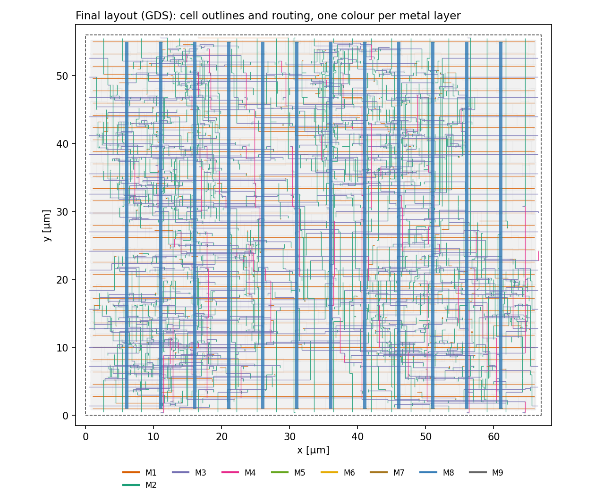

デジタル論理合成入門
RTLからsignoffまでを、動くリポジトリで体験する。
はじめに: デジタルチップはどうやって作るのか
スマートフォンの中のCPUのようなデジタル回路は、人がトランジスタを一つずつ描いて作っているわけではありません。設計者はまず「何をする回路か」を文章のようなコード（RTL）で書き、あとはツールが段階的に、実際に製造できる図面（レイアウト）まで変換します。
この変換の各段で「ちゃんと元の設計どおりか」「速度は足りるか」「製造ルールを守っているか」を確かめる作業が必要で、それが signoff（サインオフ）です。signoff が全部通って初めて、レイアウトのデータ（GDS）を工場に渡せます。
このサイトでは、小さな回路を1つ用意して、この流れを最初から最後まで自分で動かします。
論理合成（RTL → ゲート）だけでなく、配置配線・寄生抽出・signoffタイミング・ゲートレベルシミュレーション・物理検証までを、小さな回路で一周します。各ステップは1コマンドで動き、出力ログの読み方まで学べます。

使うツール
| ステップ | ツール |
|---|---|
| RTL・ゲートレベルシミュレーション | Cadence Xcelium |
| 論理合成 | Synopsys Design Compiler（dc_shell） |
| 等価性検証 | Synopsys Formality（fm_shell） |
| 配置配線 | Synopsys IC Compiler II（icc2_shell） |
| 寄生抽出 | Synopsys StarRC（StarXtract） |
| signoff STA | Synopsys PrimeTime（pt_shell） |
| DRC / LVS | Siemens Calibre |
このコースで答えられるようになる問い
| ステップ | 答える問い | 主な入力 → 出力 |
|---|---|---|
| 02 RTLシミュレーション | RTLは仕様どおり動くか | RTL, TB → PASS/FAIL（Xcelium） |
| 03 論理合成 | 目標周波数で動くゲート回路にできるか | RTL, SDC → ネットリスト（Design Compiler） |
| 04 等価性検証 | 合成しても論理は変わっていないか | RTL, ネットリスト → 等価/非等価（Formality） |
| 05 配置配線 | 実際のレイアウトにできるか（クロックツリー込み） | ネットリスト → GDS（IC Compiler II） |
| 06 寄生抽出 | 配線の抵抗・容量はいくらか | レイアウト → SPEF（StarRC） |
| 07 signoff STA | 全コーナーで setup / hold を満たすか | ネットリスト, SPEF, SDC → slack（PrimeTime） |
| 08 ゲートレベルシミュレーション | 遅延込みでも正しく動くか | ネットリスト, SDF → PASS/FAIL（Xcelium） |
| 09 物理検証 | 製造ルールを守り、回路図と一致するか | GDS → DRC/LVSレポート（Calibre） |